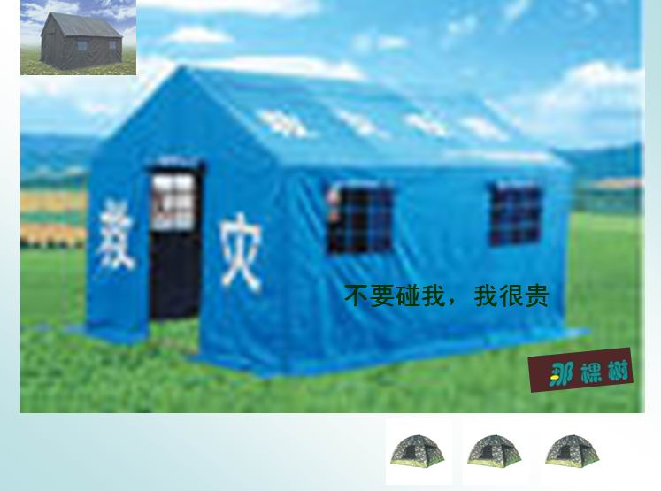
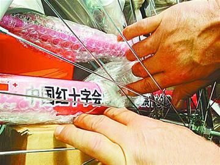

1. 红十字会之“天价帐篷”
2008年5月，网上传言，中国红十字会某官员在接受CCTV-4采访时表示，将送往灾区价值1300万元的1000多顶帐篷。经计算，每顶帐篷高达1.3万元，网友纷纷跟帖表示质疑。中国红十字会20日中午在接受《商务周刊》采访时回应先前网上质疑，说向灾区运送的帐篷平均每顶1174元，而不是网友所说的每顶1.3万元。截至19日，一共向灾区送去了价值1540多万元的帐篷13114顶。
2. 红十字会之“万元餐费”

2011年4月15日，西南民族大学教授肖雪慧在微博转发了一张餐饮发票，因发票付款单位为“上海卢湾区红十字会”，且消费金额达9859元，作为社会救助团体的卢湾区红十字会，一顿饭消费接近万元，网友们都高呼“震惊”，这张发票的相关帖子也被转发了几万条引起了网友的热议。
上海红十字会称，得悉部分网络传播“卢湾红十字会高额餐饮费”并贴出餐饮发票的情况后，上海红十字会立即责成卢湾区红十字会对情况进行调查核实。核查结果为：卢湾区红十字会于2011年2月28日以“红十字会工作会务费”支付给上海慧公馆餐饮管理有限公司9859元，发票号码为：46510945，记账凭证号为：JZ-03-0009。资金开支渠道为卢湾区红十字会的工作业务经费，确认为非社会各界捐赠的救灾救助款。
上海红十字会指出，本次活动系卢湾红十字会与相关协会商洽工作的公务活动，根据公务接待标准，人均消费水平应为150元。而此次活动参加人员17人，人均消费水平明显高于该标准，消费总额超支7309元。卢湾区有关部门已责成卢湾红十字会对超过公务接待标准的部分由个人承担，目前超标款项现已全部退回。对这种奢侈消费、严重超标消费的处理，就不能仅仅停留在超额部分“个人承担，予以退回”上。要知道，无论款项来源于哪里，是工作业务经费，还是救灾救助款，这种做法都严重损害了红十字会的形象，甚至连带伤害了其他慈善组织的形象。红十字会“万元餐”发票的出现，至少说明了一个问题，那就是践踏了厉行节约、将每一分钱都用在救灾救助等人道主义事业上的红十字会精神。如此奢侈浪费的人，又如何能做好慈善这种爱心事业？
3. 郭美美炫富门

2011年6月微博昵称“郭美美baby”和实名认证为“中国红十字会商业总经理”的用户郭美美在微博中炫富“住大别墅，开玛莎拉蒂”，并牵扯上“中国红十字会”而引起广泛关注及争议。
中国红十字会总会2011年6月22日发表公开声明表示，在网络炫耀奢华生活方式，引发网友热议的郭美玲与红十字会无关。声明说，经对有关信息的调查、核实，中国红十字会没有“红十字商会”机构，也未设有“商业总经理”职位，更没有“郭美玲”其人。
6月26日，“郭美美Baby”在微博中声称，“出于无知在新浪微博上自称‘中国红十字会商业总经理’，对此愚昧行为给中国红十字会造成的名誉损害和公众误解深表歉意!本人从未在中国红十字会工作，身份完全本人杜撰。决定用更多时间来自我反省和自我教育。”郭美美事件让中国慈善事业陷入历史冰点，让中国红会深陷信任危机，同时加快推动慈善机构改革，让每笔善款来源支出公开透明的呼声也越来越高。
4. 红十字会之“天价采购”
2011年6月27日，国家审计署审计长刘家义向全国人大常委会作《关于2010年度中央预算执行和其他财政收支的审计工作报告》。报告中提到，今年1-3月，审计署对中国红十字会总会2010年度预算执行情况和其他财政收支情况进行了审计，并在审计过程中发现中国红十字会总会在预算执行和其他财政收支中存在“超标采购420万元”等问题。审计署此次发布中央五十多个国家部委和事业单位财政预算执行的审计报告，但独有中国红十字会总会的审计结果引来公众的格外关注，个中当然有之前郭美美事件的助推因素，但亦可从中窥见人们对红十字会由来已久的持续担忧。
5. 仁爱基金捐劣质自行车
2012年4月，中国红十字会旗下用于助学、救助社会弱势群体、改善贫困地区农村医疗卫生条件的“仁爱基金”由于向大型国企等非弱势群体主动捐赠劣质自行车遭到公众广泛质疑。有媒体报道，2011年开始，中国红基会仁爱基金向陕西十多家单位主动捐赠上万辆自行车，捐赠自行车号称值700多元，实际只值140元，且受捐单位多为国企。捐者称这些车质量很差，骑两下就爆胎。
随后中国红十字基金会通过微博回应称已关注到媒体关于仁爱基金捐赠自行车的有关报道，红会对此非常重视，并就已反应的有关情况展开调查。后来调查结果显示，针对网友质疑“志愿办采购所捐赠物品是否存在违法违规行为”，没有任何证据表明志愿办及其委托人在采购自行车时有谋取私利的行为，时任志愿办主任的时进龙违反公益基金的募集、管理规则，不遵守中国红基会的相关规定，存在严重违规情况。事业发展中心决定终止对时进龙的聘任并撤销志愿办。